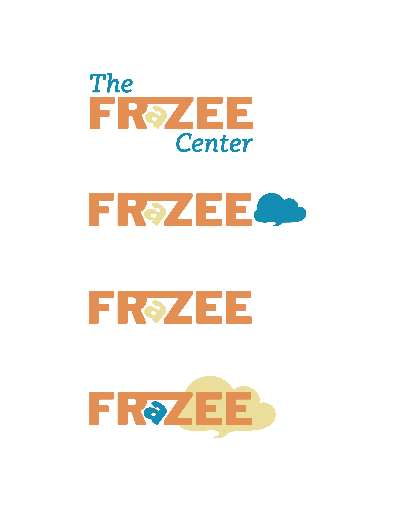
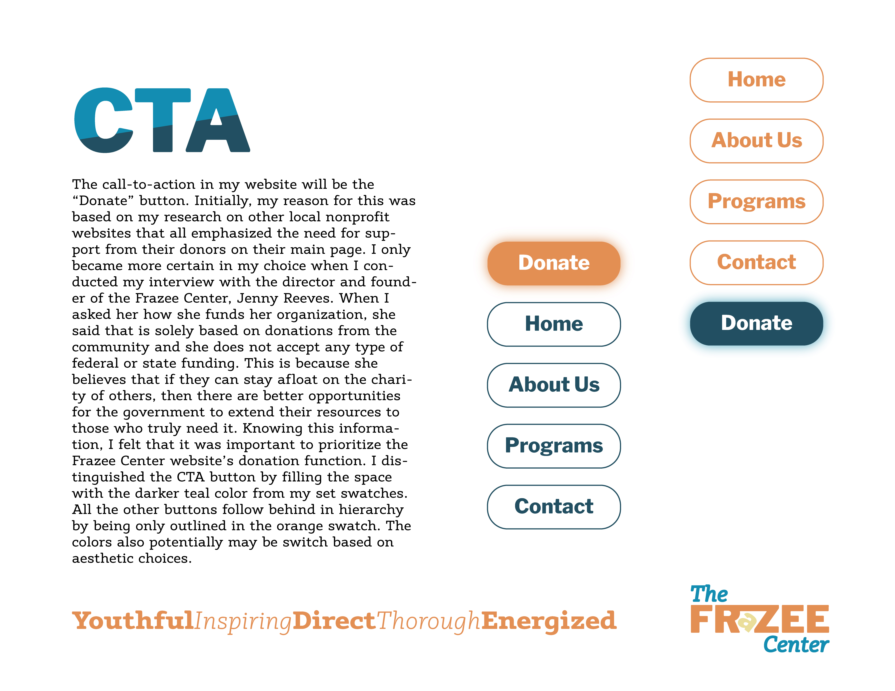
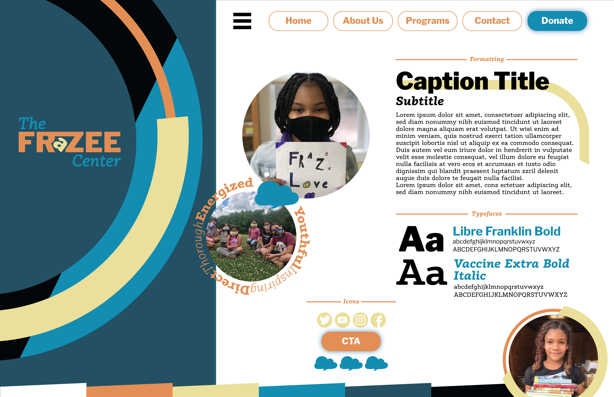
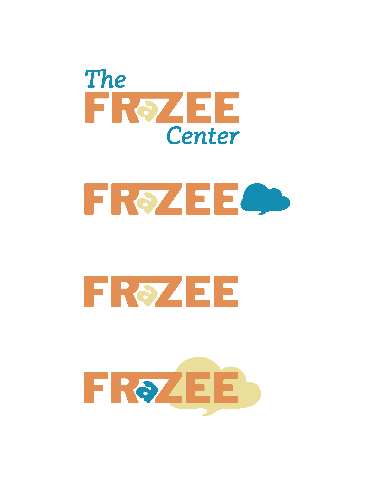
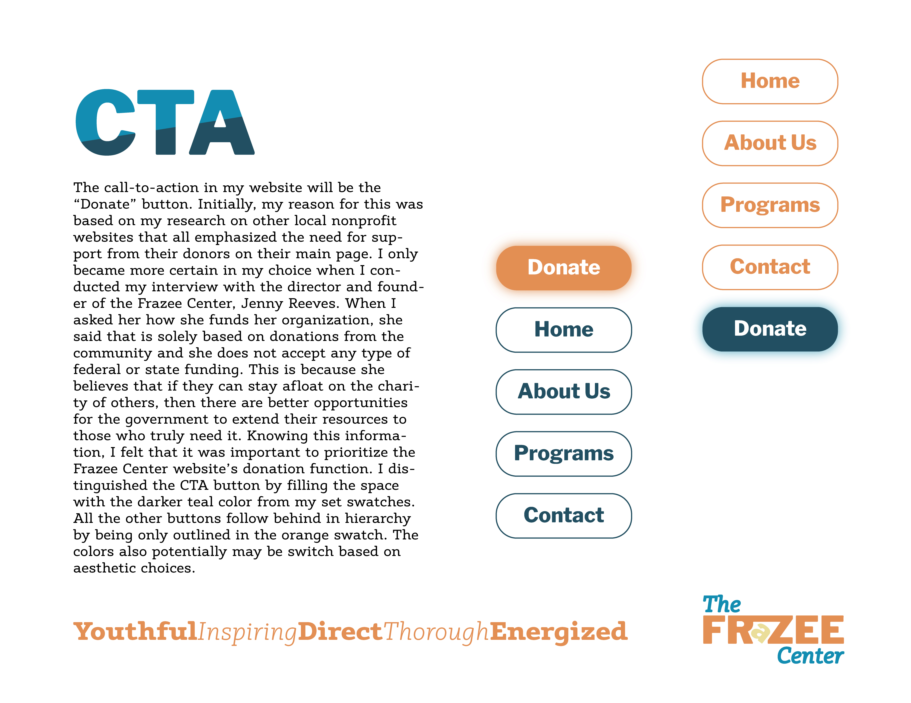
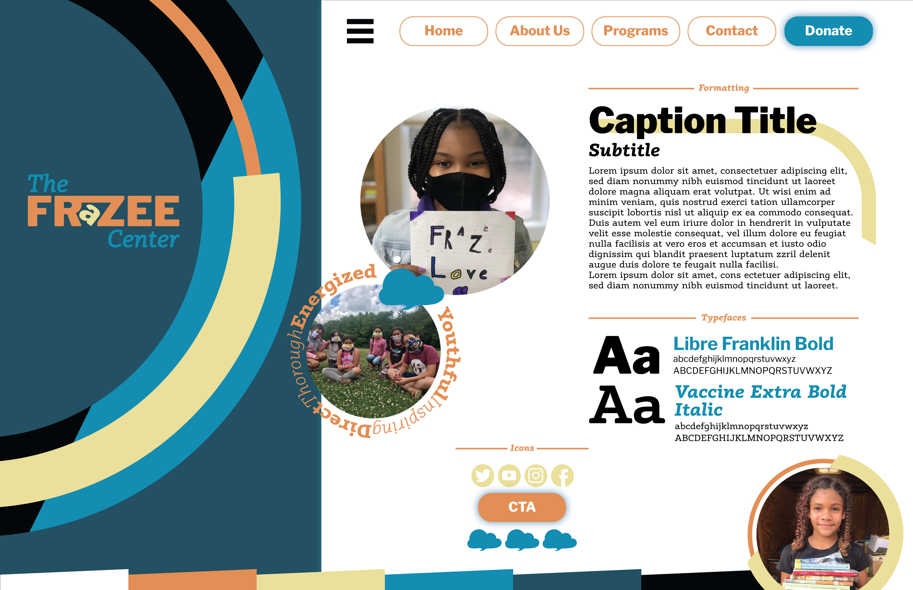

CTA and Style Tile
Nullam posuere erat vel placerat rutrum. Praesent ac consectetur dui, et congue quam. Donec aliquam lacinia condimentum.
My work for the Frazee Center style tile and establishing the call-to-action.
  
Nullam posuere erat vel placerat rutrum. Praesent ac consectetur dui, et congue quam. Donec aliquam lacinia condimentum.
My work for the Frazee Center style tile and establishing the call-to-action.
  